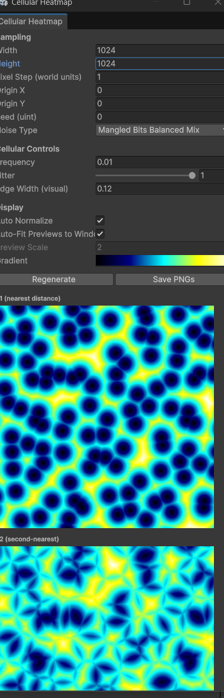

CellularHeatmapWindow
Source: ./Editor/Tools/CellularHeatmapWindow.cs
Overview
An Editor window for visualizing Worley/Cellular noise. It renders compact heatmaps for F1, F2, and F2 − F1 using multiple distance metrics so you can quickly sanity-check “wormy” vs “blocky/diamond” looks and compare presets/seeds.
Open it from the Unity menu:
Core Framework → Tools → Cellular Heatmap

The window can Regenerate previews with new parameters and Save PNGs of each preview.
What it shows
- F1 (nearest distance) — scalar field to the closest feature point (Euclidean metric).
- F2 (second-nearest distance) — second closest.
- Edges: F2 − F1
- Euclidean (“wormy” borders)
- Chebyshev (“blocky”/square borders)
- Manhattan (“diamond” borders)
Controls (UI)
Sampling
- Width / Height — output texture size (px).
- Pixel Step (world units) — how far world-space advances per pixel; lowers/raises sampling density.
- Origin X / Origin Y — world-space offset for tiling/scroll tests.
- Seed (uint) — feature distribution seed.
- Noise Type — hashing variant from
NoiseType(e.g.,MangledBitsBalancedMix).
Cellular Controls
- Frequency — features per world unit (higher → more, smaller cells).
- Jitter (0–1) — scatter points within a cell; 0 = at cell center, 1 = full jitter.
- Edge Width (visual) — scales
F2 − F1before clamping to [0,1]; smaller values accentuate edges.
Display
- Auto Normalize — normalize F1/F2 to each image’s observed min/max.
- Auto-Fit Previews to Window — scale rows to width.
Preview Scale — manual scale when Auto-Fit is off. - Gradient — color ramp used for all previews.
Actions
- Regenerate — recompute all buffers and textures with current parameters.
- Save PNGs — writes
F1.png,F2.png,Edges_Euclidean.png,Edges_Chebyshev.png,Edges_Manhattan.pngusingNoiseEditorHelper.SavePng.
Tips
- Start with Jitter = 1 and Frequency ≈ 0.01 for clearly visible cells.
- Lower Edge Width (e.g.,
0.05) to emphasize ridges inF2 − F1. - Animate Origin or Seed to compare stability of presets.
- Turn Auto Normalize off when you need comparable absolute ranges between runs.
Dependencies
Unity.Mathematics(float2)CoreFramework.Random.HashBasedNoiseUtilsCoreFramework.Random.SquirrelNoise32Bit.Cellular2DNoiseEditorHelper(texture creation/drawing/saving helpers)- Enums:
NoiseType,CellularDistance
Related API / Docs
- SquirrelNoise32Bit
- HashBasedNoiseUtils
- NoiseType
- HashBasedNoiseUtils.CellularDistance
- NoiseEditorHelper
- SquirrelNoiseHeatMapWindow
Notes
- Previews are rebuilt on demand; large sizes will allocate buffers of
width × heightfloats per preview. - PNGs are saved using the helper’s default path/prompt behavior.